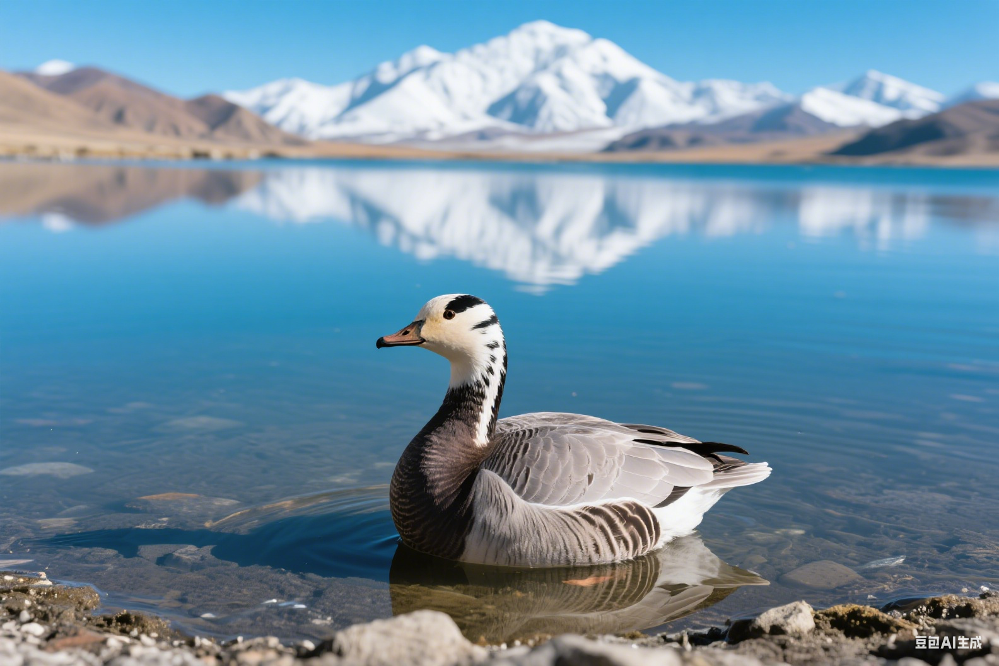

"조류이동是地球上最壮观的자연现象之一，它연결着다른的생태시스템，维持着全球生物다양性。"
— 이동생태学家🌍 이동的생태学의미
조류이동是一种适应性행동，使조류能够이용다른地区的계절性자원，避开恶劣환경조건。这种행동对个体生存、种群动态和생태시스템기능都有深远영향。
🍎 자원최적화이용
在다른계절이용다른地区的食物자원
- 번식期：高纬度地区昆虫풍부
- 越冬期：低纬度地区气候温和
- 避开자원稀缺期
🌡️ 气候适应
避开极端天气조건
- 逃避严寒和食物短缺
- 寻找适宜的번식조건
- 감소能量消耗
🧬 遗传다양性
촉진다른种群间的基因교류
- 감소近亲번식
- 증강种群适应性
- 维持遗传건강한
🗺️ 주요이동路线
全球조류이동遵循几条주요的飞行路线，这些路线被称为"이동通道"：
🌏 东亚-澳大利西亚이동路线
연결阿拉斯加、西伯利亚与东南亚、澳大利亚
- 주요物种：鸻鹬类、雁鸭类、猛禽
- 핵심停歇地：黄海湿地、长江口
- 威胁：湿地丧失、海平面상승
🌍 中亚이동路线
연결西伯利亚与南亚、非洲
- 주요物种：鹤类、猛禽、鸣禽
- 핵심停歇地：里海、咸海地区
- 威胁：서식지退化、气候변화
🌎 美洲이동路线
연결北美洲与中南美洲
- 주요物种：莺类、鹟类、蜂鸟
- 핵심停歇地：墨西哥湾沿岸
- 威胁：森林砍伐、城市化
🌍 欧洲-非洲이동路线
연결欧洲与撒哈拉以南非洲
- 주요物种：燕子、鹟类、鹳类
- 핵심停歇地：地中海沿岸
- 威胁：沙漠化、人为干扰
📅 이동시간模式
다른조류的이동시간有明显的규칙적인性：
🌸 봄철이동 (2-5月)
초기이동者 (2-3月)
雁鸭类、鹤类、부분적인猛禽
중기이동者 (3-4月)
大부분적인鸣禽、鸻鹬类
후기이동者 (4-5月)
鹟类、莺类、燕子
🍂 가을철이동 (8-11月)
초기이동者 (8-9月)
鸻鹬类、부분적인鸣禽
중기이동者 (9-10月)
大부분적인鸣禽、猛禽
후기이동者 (10-11月)
雁鸭类、鹤类
🧭 导航机制
조류拥有多种导航机制来완성된长距离이동：
⛽ 能量전략
长距离이동필요巧妙的能量관리전략：
🥜 脂肪储备
- 이동前大量进食储存脂肪
- 体重可증가50-100%
- 脂肪提供효율적인能量
- 감소飞行时的负重
🛑 停歇전략
- 选择食物풍부的停歇地
- 빠른补充能量
- 休息和복구体力
- 等待有利天气조건
🌬️ 飞行전략
- 이용热气流节省能量
- V字形编队감소阻力
- 选择최고의飞行高度
- 避开逆风和恶劣天气
🌊 생태시스템연결
이동조류연결着다른的생태시스템，발휘중요한的생태기능：
🌰 营养传输
在다른생태시스템间传输营养物质
- 海洋营养物质传输到陆地
- 高纬度营养传输到低纬度
- 鸟粪富含氮磷等营养元素
🌱 种子传播
촉진植物在다른地区的扩散
- 长距离种子传播
- 跨생태시스템植物교류
- 촉진植物다양性
🦠 病原体传播
可能传播疾病和寄生虫
- 禽流感等疾病传播
- 寄生虫扩散
- 필요监测和防控
⚠️ 이동面临的威胁
现代이동조류面临前所未有的威胁：
🏗️ 서식지丧失
- 번식地森林砍伐
- 停歇地湿地填埋
- 越冬地开发建设
- 핵심서식지破碎化
🌡️ 气候변화
- 이동시간与食物可获得性不匹配
- 极端天气사건증가
- 海平面상승淹没停歇地
- 서식지分布范围변경
🏢 人为障碍
- 高楼大厦碰撞
- 风力发电机伤害
- 输电线路电击
- 光污染干扰导航
🏭 환경污染
- 农药中毒
- 海洋塑料污染
- 重金属污染
- 噪音污染干扰
🛡️ 보호전략
보호이동조류필요国际협력적인和综合措施：
🌐 国际협력적인
- 签署国际보호协议
- 建立跨国보호네트워크
- 共享监测데이터
- 协调보호行动
🏞️ 서식지보호
- 建立보호区네트워크
- 보호핵심停歇地
- 복구退化서식지
- 建立생태走廊
📊 과학적인监测
- 卫星跟踪기술
- 环志标记연구
- 种群动态监测
- 이동路线조사
🏛️ 정책법규
- 制定보호법적인
- 规范开发建设
- 제어환경污染
- 推广생태농업의
👥 公众참여
보통의人也可以为이동조류보호做出기여：
- 참여조류조사和监测
- 보고서조류관찰기록
- 지원보호단체和프로젝트
- 감소对이동路线的干扰
- 宣传이동조류보호지식